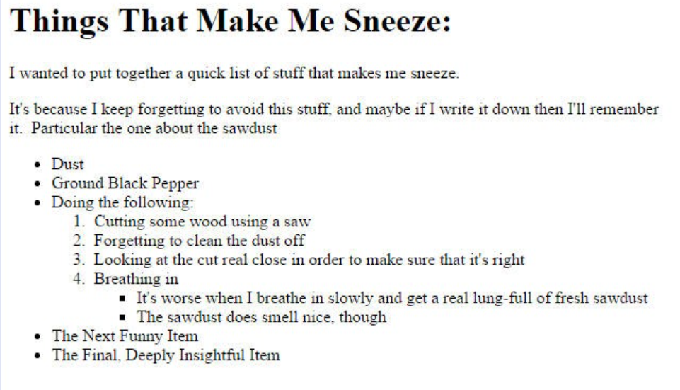

Things That Make Me Sneeze:
I wanted to put together a quick list of stuff that makes me sneeze.
It's because I keep forgetting to avoid this stuff and maybe if I write it down then I'll remember
it.
Particular the one about the sawdust
- Dust
- Ground Black Pepper
- Doing the following:
- Cutting some wood using a saw
- Forgetting to clean the dust off
- Looking at the cut real close in order to make sure that's right
- Breathing in
- It's worse when I breathe in slowly and get a real lung-full of fresh sawdust
- The sawdust smell nice, though
- The Next Funny Item
- The Final, Deeply Insightful Item
